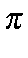

The molecular orbitals generated by diagonalization are normally delocalized
over the system. By using a unitary transform of the occupied M.O.s, it is
possible to generate a set of molecular orbitals which are localized on from
one up to three centers.
These localized M.O.s are not eigenvectors of the Hamiltonian, nor are their
energies eigenvalues. However, localized orbitals can be equated with the
single, double, triple, and delocalized -bonds of classical organic
chemistry.